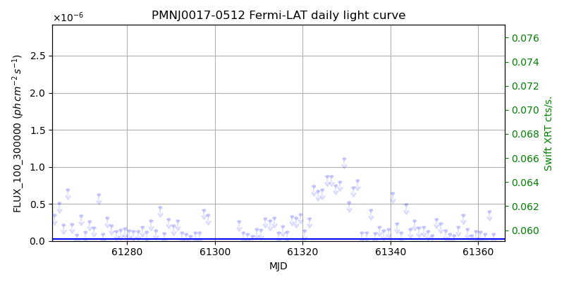
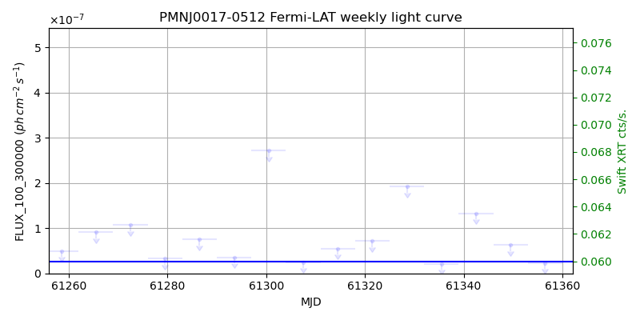
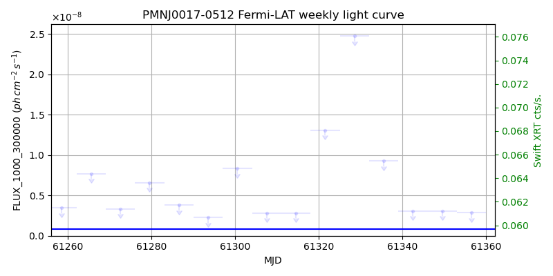

LAT Lightcurve site: https://fermi.gsfc.nasa.gov/ssc/data/access/lat/msl_lc/source/PMN_J0017-0512
Swift site: https://www.swift.psu.edu/monitoring/source.php?source=PMNJ0017-0512
NED: Query
Time of last update of this page: UT: 2026-11-28 16:11 (MJD: 61372.674)
| Property | Value |
|---|---|
| R.A. | 0:17:35.76 |
| Dec. | -5:12:43.2 |
| z | 0.227 |
| 3FGL SpectrumType | PowerLaw |
| 3FGL PL Index | 2.51 |
| 3FGL Flux_100_300000 | 2.55e-08 1 / (s cm2) |
| 3FGL Flux_1000_300000 | 7.96e-10 1 / (s cm2) |
| 3FGL Flux >200 GeV | 2.72e-13 1 / (s cm2) |
| 3FGL Extrap. Crab >200 GeV | 0.00 |
| 3FGL Flux After EBL Absorption >200GeV | 1.27e-13 1 / (s cm2) |
| 3FGL EBL Crab Fraction >200GeV | 0.00 |

| MJD | dMJD | Flux | dFlux | Frac3FGL | FracCrab>200GeV | EBLFracCrab>200GeV |
|---|---|---|---|---|---|---|
| 61367.50 | 0.50 | 1.41e-07 | 0.00e+00 | 0.00 | 0.00 | 0.00 |
| 61368.50 | 0.50 | 1.22e-07 | 0.00e+00 | 0.00 | 0.00 | 0.00 |
| 61369.50 | 0.50 | 3.81e-07 | 0.00e+00 | 0.00 | 0.00 | 0.00 |
| 61370.50 | 0.50 | 2.42e-07 | 0.00e+00 | 0.00 | 0.00 | 0.00 |
| 61371.50 | 0.50 | 6.75e-08 | 0.00e+00 | 0.00 | 0.00 | 0.00 |

| MJD | dMJD | Flux | dFlux | Frac3FGL | FracCrab>200GeV | EBLFracCrab>200GeV |
|---|---|---|---|---|---|---|
| 61335.50 | 3.50 | 2.11e-08 | 0.00e+00 | 0.00 | 0.00 | 0.00 |
| 61342.50 | 3.50 | 1.33e-07 | 0.00e+00 | 0.00 | 0.00 | 0.00 |
| 61349.50 | 3.50 | 6.28e-08 | 0.00e+00 | 0.00 | 0.00 | 0.00 |
| 61356.50 | 3.50 | 2.28e-08 | 0.00e+00 | 0.00 | 0.00 | 0.00 |
| 61363.50 | 3.50 | 7.65e-08 | 0.00e+00 | 0.00 | 0.00 | 0.00 |
| MJD | dMJD | Flux | dFlux | Frac3FGL | FracCrab>200GeV | EBLFracCrab>200GeV |
|---|---|---|---|---|---|---|
| 61367.50 | 0.50 | 1.24e-08 | 0.00e+00 | 0.00 | 0.00 | 0.00 |
| 61368.50 | 0.50 | 1.40e-08 | 0.00e+00 | 0.00 | 0.00 | 0.00 |
| 61369.50 | 0.50 | 2.52e-08 | 0.00e+00 | 0.00 | 0.00 | 0.00 |
| 61370.50 | 0.50 | 2.21e-08 | 0.00e+00 | 0.00 | 0.00 | 0.00 |
| 61371.50 | 0.50 | 1.49e-08 | 0.00e+00 | 0.00 | 0.00 | 0.00 |

| MJD | dMJD | Flux | dFlux | Frac3FGL | FracCrab>200GeV | EBLFracCrab>200GeV |
|---|---|---|---|---|---|---|
| 61335.50 | 3.50 | 9.29e-09 | 0.00e+00 | 0.00 | 0.00 | 0.00 |
| 61342.50 | 3.50 | 3.09e-09 | 0.00e+00 | 0.00 | 0.00 | 0.00 |
| 61349.50 | 3.50 | 3.08e-09 | 0.00e+00 | 0.00 | 0.00 | 0.00 |
| 61356.50 | 3.50 | 2.86e-09 | 0.00e+00 | 0.00 | 0.00 | 0.00 |
| 61363.50 | 3.50 | 2.37e-09 | 0.00e+00 | 0.00 | 0.00 | 0.00 |
--------------------------------------------------------- Using user-supplied coords: 0:17:35.76 -5:12:43.2 2000 --------------------------------------------------------- FLWO UT night of: 2026-11-29 Local Sid. @ Midnight: 04:08 Sunset (-15.0) (local, UT): 18:31 01:31 Sunrise (-15.0) (local, UT): 05:53 12:53 Moonrise (local, UT): 21:57 04:57 Moonset (local, UT): Moon phase: 0.72 --------------------------------------------------------- AzTime LSID UT Obj_el Obj_az Mn_el Mn_az Sep. --------------------------------------------------------- 18:31 22:39 01:31 46.3 142.6 -32.9 32.1 126.6 19:01 23:09 02:01 49.7 152.6 -29.4 38.9 127.0 19:31 23:39 02:31 52.1 163.9 -25.4 45.0 127.3 20:01 00:09 03:01 53.2 176.1 -21.0 50.6 127.7 20:31 00:39 03:31 52.9 188.6 -16.2 55.6 128.1 21:01 01:09 04:01 51.3 200.5 -11.1 60.2 128.4 21:31 01:39 04:31 48.5 211.3 -5.4 64.5 128.7 22:01 02:09 05:01 44.8 220.7 0.4 68.5 129.0 22:31 02:39 05:31 40.3 228.9 5.8 72.2 129.3 23:01 03:10 06:01 35.2 235.8 11.6 75.8 129.6 23:31 03:40 06:31 29.7 241.9 17.5 79.4 129.9 00:01 04:10 07:01 23.9 247.2 23.6 82.9 130.2 00:31 04:40 07:31 18.0 252.0 29.7 86.5 130.4 01:01 05:10 08:01 11.8 256.5 35.8 90.3 130.7 01:31 05:40 08:31 5.6 260.6 42.0 94.4 130.9 02:01 06:10 09:01 -0.2 264.6 48.1 99.1 131.1 02:31 06:40 09:31 -7.2 268.5 54.2 104.7 131.3 03:01 07:10 10:01 -13.7 272.5 60.1 111.7 131.5 03:31 07:40 10:31 -20.0 276.6 65.6 121.1 131.7 04:01 08:10 11:01 -26.4 281.0 70.5 134.7 131.9 04:31 08:40 11:31 -32.6 285.7 74.0 154.7 132.1 05:01 09:11 12:01 -38.7 291.1 75.2 181.1 132.2 05:31 09:41 12:31 -44.5 297.4 73.6 206.8 132.4 05:53 10:02 12:53 -48.5 302.7 71.0 221.2 132.6 --------------------------------------------------------- Source never above horizon of 55.0 deg. Dark hours >55 deg.: 0.00